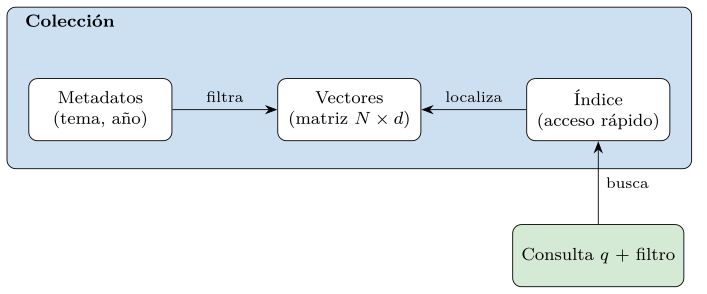
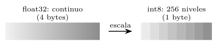
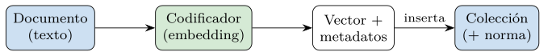
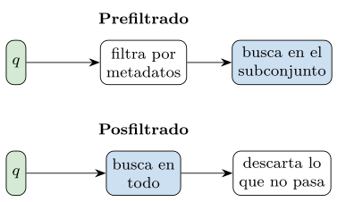
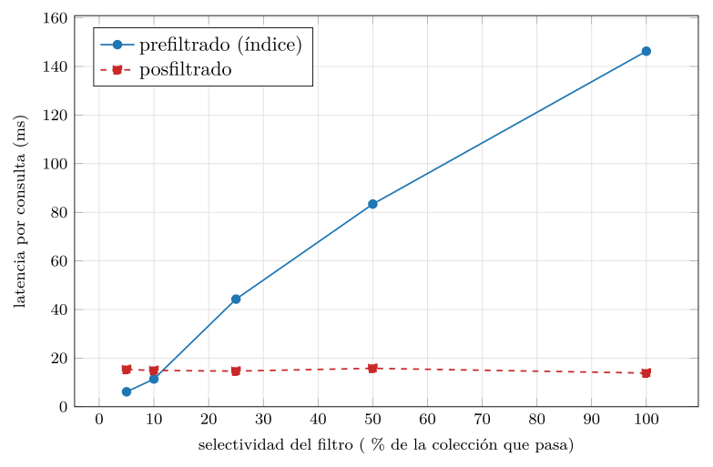
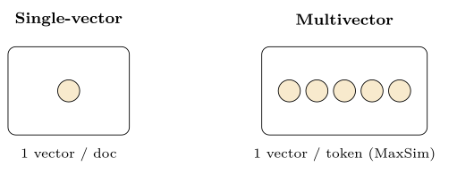
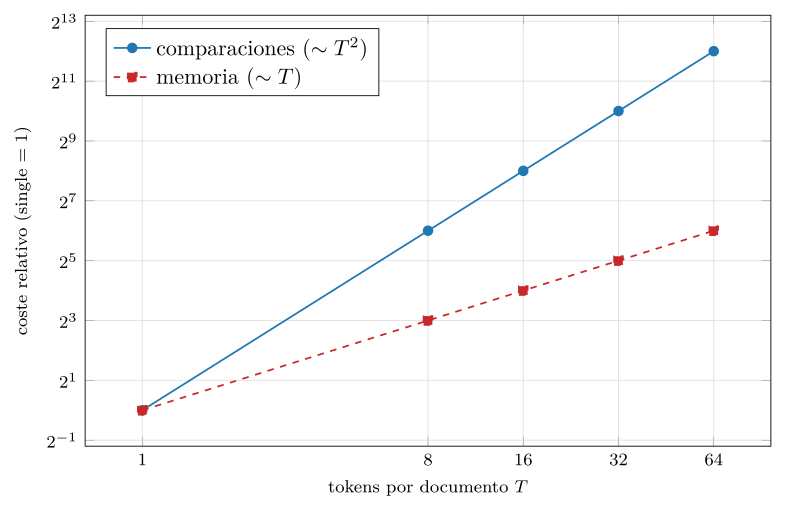

Capítulo 14. Anatomía de una base de datos vectorial
Las tres partes anteriores han construido, ladrillo a ladrillo, todo lo necesario para entender qué es un vector y cómo se compara con otro. La primera fijó la disciplina del dato estructurado y la persistencia; la segunda relajó el esquema y aprendió a distribuir; la tercera pasó de la coincidencia exacta a la similitud, representó el significado como un vector denso y estudió la geometría del espacio donde esos vectores viven. Con eso, el lector tiene en la mano las dos piezas que definen la búsqueda por similitud: el vector —producido por un codificador— y la distancia —que mide el parecido—. Lo que falta es el sistema que las pone a trabajar a escala: una base de datos vectorial.
Esta cuarta parte es, por fin, la ingeniería. No introduce conceptos nuevos sobre qué es el parecido —eso quedó cerrado en el capítulo 13— sino que construye la maquinaria que almacena millones de vectores y encuentra los más próximos a una consulta en milisegundos. Empieza, en este capítulo, por la anatomía: de qué partes está hecha una base de datos vectorial, qué hace cada una y cómo encajan. La mejor forma de diseccionar algo es construir uno pequeño y mirar por dentro, y eso es justo lo que hace la práctica: un mini almacén vectorial completo, escrito desde cero en numpy, con sus vectores, sus metadatos, su ingesta y su búsqueda. Sobre ese esqueleto se entiende después cualquier motor real —pgvector, Qdrant, Milvus—, que no es sino la misma anatomía con mucha más ingeniería encima (Pan et al. 2024).
Conviene fijar desde el principio una idea que el capítulo entero desarrollará: una base de datos vectorial no inventa nada radicalmente nuevo, sino que integra dos mundos que el lector ya conoce. Del lado de la base de datos hereda todo lo de las tres primeras partes —persistir, indexar, consultar, distribuir, dar garantías—; del lado de lo vectorial, la representación densa del capítulo 11, el codificador del capítulo 12 y la geometría del capítulo 13. La novedad no está en las piezas, sino en su unión: un sistema donde el tipo de dato central es el vector y la operación central es «encontrar lo más parecido». Por eso este capítulo no necesita conceptos nuevos, solo ensamblar con cuidado los que ya están.
Cuatro son las partes que este capítulo recorre, siguiendo el esqueleto del sistema. Primero, el almacenamiento: cómo se guardan el vector y sus metadatos, cuánta memoria cuestan y cómo la cuantización la reduce. Segundo, la ingesta: cómo entran los datos, cómo se vectorizan y qué conviene precomputar al insertarlos. Tercero, y central, el índice: la estructura que permite encontrar los vecinos sin comparar contra todos —aquí, en su forma más simple, la búsqueda exacta, cuyo coste medido explica por qué el capítulo siguiente necesita índices aproximados—. Y cuarto, el caso multivector: qué cambia cuando cada documento no es un vector sino muchos. Todo, como siempre, medido: la huella en memoria, la latencia de la búsqueda, el coste del filtrado, el error de la cuantización y el precio del multivector salen de un módulo que se ejecuta en una CPU normal y produce datos reales.
Almacenamiento del vector y los metadatos
En el corazón de toda base de datos vectorial hay una estructura sorprendentemente simple: una gran matriz de números en coma flotante, una fila por vector, una columna por dimensión. Si hay un millón de documentos codificados en vectores de 768 dimensiones, el dato esencial es una matriz de un millón por 768. A esa matriz se le adjunta, en paralelo, la información que la acompaña —los metadatos: el identificador del documento, su tema, su fecha, su autor— y una estructura de acceso —el índice— que evita recorrer la matriz entera en cada consulta. Esas tres piezas —vectores, metadatos, índice— forman la colección, la unidad básica con la que se trabaja (figura 14.1).

Los metadatos merecen una palabra propia, porque son la pieza que conecta la búsqueda por similitud con el mundo estructurado de las tres primeras partes. Cada vector lleva adjunta una colección de campos —identificador, tema, fecha, autor, permisos, precio, lo que el dominio pida— que en la jerga de los motores vectoriales suele llamarse payload. Esos campos cumplen dos funciones. La primera es devolver contexto: el resultado de una búsqueda no es un vector —que al usuario no le dice nada— sino el documento que representa, recuperado a través de su identificador. La segunda, más interesante, es filtrar: restringir la búsqueda a los vectores cuyos metadatos cumplen una condición, lo que exige que los metadatos estén, a su vez, indexados —con los índices clásicos del capítulo 2—. Una base vectorial es, por eso, también una pequeña base de datos relacional para sus metadatos, y su eficacia en la consulta híbrida depende tanto del índice vectorial como del índice de metadatos.
La separación entre el vector y sus metadatos no es casual. El vector es un objeto numérico denso y homogéneo, idóneo para el cálculo masivo —multiplicaciones de matrices, que las CPU y GPU devoran—; los metadatos son heterogéneos, dispersos y de tipos variados, idóneos para el filtrado relacional clásico. Una base vectorial bien diseñada los guarda de formas distintas porque sirven a operaciones distintas, y los une solo cuando hace falta. Es, en el fondo, la misma separación entre el dato y su contexto que recorre todo el libro, ahora con el dato convertido en un punto de un espacio de cientos de dimensiones.
La primera consecuencia práctica de que el dato sea una gran matriz de números es que ocupa, y mucho. Un vector de 768 dimensiones en coma flotante de simple precisión (float32, cuatro bytes por número) pesa algo más de tres kilobytes; parece poco, pero multiplicado por millones se dispara. La práctica lo calcula sin rodeos (figura 14.2): un millón de esos vectores ocupa unos 3 gigabytes, y diez millones, más de 30. Y eso es solo el dato en bruto, sin contar el índice ni los metadatos. La memoria —no el cómputo— es a menudo el primer límite que encuentra una base vectorial al crecer.

float32 (4 bytes) a int8 (1 byte) la memoria se divide por cuatro: la cuantización es la palanca central del almacenamiento a gran escala. Datos de src/cap14_anatomia.py.De ahí que el tipo numérico con que se guardan los vectores sea una decisión de primer orden. Bajar de float32 a media precisión (float16, dos bytes) reduce la memoria a la mitad casi sin pérdida; bajar a enteros de un byte (int8) la reduce a la cuarta parte. Esa reducción —comprar memoria a cambio de un poco de precisión— se llama cuantización, y es tan central que merece su propia sección.
Cuantización: comprar memoria con un poco de error
Cuantizar un vector es representar cada una de sus componentes con menos bits. La forma más común, la cuantización escalar a int8, reparte el rango de valores de cada vector en 256 niveles enteros, guardando un único factor de escala por vector para poder reconstruir los valores aproximados (figura 14.3). Cada número pasa de cuatro bytes a uno, y la matriz entera adelgaza a la cuarta parte. La pregunta es cuánto se degrada la búsqueda al hacerlo, y la respuesta, medida, es tranquilizadora.

int8: el rango continuo de cada componente (float32, 4 bytes) se reparte en 256 niveles enteros (int8, 1 byte) con un factor de escala por vector. La cuarta parte de memoria a cambio de un error mínimo.La práctica cuantiza una colección a int8, reconstruye los vectores y compara la búsqueda contra la original (tabla 14.1). El error relativo medio que introduce la cuantización es de apenas un 0,7 %, y —lo que de verdad importa— el recall@10 —la fracción de los diez verdaderos vecinos que la versión cuantizada recupera— se mantiene en torno al 95 %. Es decir: con la cuarta parte de memoria se recuperan, casi siempre, los mismos resultados. No es magia, sino la manifestación práctica de la robustez geométrica del capítulo 13: si los datos tienen estructura y los vecinos están claramente más cerca que el resto, un pequeño ruido de cuantización no altera el orden de los primeros puestos.
| Tipo | Bits/comp. | Memoria relativa | recall@10 |
|---|---|---|---|
float32 |
32 | \(1{,}00\) | \(1{,}00\) |
int8 |
8 | \(0{,}25\) | \(0{,}95\) |
El listado 14.1 muestra la operación completa: hallar el factor de escala por vector —el mayor valor absoluto dividido por 127—, dividir, redondear a entero y, para buscar, reconstruir los valores aproximados multiplicando de nuevo por la escala. La cuantización avanzada —la cuantización de producto (PQ), que descompone el vector en trozos y los codifica con un diccionario (Jégou et al. 2011)— llega mucho más lejos en compresión, y se verá en el capítulo 15; la escalar a int8 es su versión más simple y ya enseña la idea.
En el extremo de la compresión está la cuantización binaria: representar cada componente con un solo bit —su signo—, de modo que un vector de 768 dimensiones pasa de 3 kilobytes a apenas 96 bytes, una reducción de 32 a 1. La distancia entre vectores binarios se calcula entonces con la distancia de Hamming del capítulo 13 —contar bits distintos—, una operación que el procesador ejecuta a una velocidad asombrosa. El precio es una pérdida de precisión mayor que con int8, que se compensa con una estrategia en dos etapas: usar los vectores binarios para un primer cribado rapidísimo de candidatos y reordenar después los finalistas con los vectores originales o cuantizados a int8. Es la misma idea de dos etapas —cribado barato seguido de reordenación cara— que reaparecerá en la recuperación del capítulo 17; la geometría del capítulo 13, una vez más, es la que dice por qué un cribado tan agresivo todavía conserva los vecinos de verdad.
def cuantizar_int8(vecs):
escala = np.abs(vecs).max(axis=1, keepdims=True) / 127.0
q = np.round(vecs / (escala + 1e-12)).astype(np.int8)
return q, escala # un byte por componente
def reconstruir(q, escala):
return q.astype(np.float32) * escala # valores aproximadosListado 14.1. Cuantizacion escalar a int8: un factor de escala por vector, redondeo a entero y reconstruccion aproximada para buscar.
Persistencia y disposición en disco
Al final, la colección tiene que vivir en algún sitio cuando el proceso se apaga, y aquí reaparece toda la disciplina de persistencia de la primera parte. Los vectores se escriben a disco como un bloque binario contiguo —una operación tan simple como volcar la matriz— y los metadatos, en una estructura que permita filtrarlos, a menudo una tabla relacional o un fichero columnar. La clave del rendimiento es la disposición (layout): guardar los vectores de forma contigua y alineada permite leerlos en bloques grandes y aprovechar la caché del procesador, mientras que dispersarlos obliga a saltos costosos. Es el mismo principio que regía los índices B-tree del capítulo 2 —la localidad manda— trasladado a un dato mil veces más voluminoso. Un motor real añade aquí memory mapping para trabajar con colecciones mayores que la memoria, compresión en disco y particionado, pero el gesto esencial —escribir la matriz como un bloque— es el del listado 14.2.
def guardar(self, ruta):
np.save(ruta, self.vectores) # bloque binario contiguo
# los metadatos van aparte: tabla relacional o fichero columnarListado 14.2. Persistencia minima: la matriz de vectores a disco como un unico bloque binario contiguo; los metadatos, aparte, en forma consultable.
Ingesta y vectorización
Antes de poder buscar, hay que meter los datos, y ese proceso —la ingesta— tiene su propia anatomía. Cada documento recorre un pequeño oleoducto: se codifica en un vector con el modelo del capítulo 12, se le adjuntan sus metadatos y se inserta en la colección (figura 14.4). El paso caro es la vectorización —pasar el texto por el codificador—, que suele hacerse fuera de la base, en lotes, con GPU; la base recibe ya los vectores listos. Esta separación entre quien produce los vectores (el codificador) y quien los almacena y busca (la base vectorial) es una decisión de arquitectura constante, y la razón de que muchas bases vectoriales no incluyan el modelo: esperan recibir embeddings.

Insertar los vectores de uno en uno es lento: cada inserción individual paga el coste fijo de actualizar las estructuras. Por eso la ingesta se hace por lotes: se acumulan muchos vectores y se insertan de golpe, amortizando ese coste. En el mini almacén, agregar un lote es apilar su matriz sobre la existente y extender la lista de metadatos (listado 14.3). Un motor real hace mucho más —construye o actualiza el índice, replica, registra en un write-ahead log como el del capítulo 5— pero la operación lógica es esa: añadir filas a la gran matriz.
def agregar(self, vecs, metas):
vecs = vecs.astype(np.float32)
self.vectores = np.vstack([self.vectores, vecs])
self.metadatos.extend(metas)
normas = np.linalg.norm(vecs, axis=1) # se precomputa
self.normas = np.concatenate([self.normas, normas])Listado 14.3. Ingesta por lotes en el mini almacen: apilar la matriz del lote y extender los metadatos; el coste fijo se amortiza sobre muchos vectores.
Hay una optimización pequeña y reveladora escondida en ese listado: al ingestar, se calcula y se guarda la norma de cada vector. El motivo viene directo del capítulo 13. La similitud coseno —la métrica más usada— divide el producto escalar por las normas de los dos vectores; si la norma de cada vector almacenado se ha precalculado en la ingesta, cada consulta posterior se ahorra recalcularla, y son millones de consultas contra los mismos vectores. Mejor aún: muchas bases normalizan los vectores en la ingesta —los llevan a la esfera unidad de una vez— de modo que la búsqueda por coseno se reduce a un simple producto escalar, la operación que el hardware ejecuta más rápido. Es la lección del capítulo 13 hecha ingeniería: como sobre vectores normalizados el coseno es un producto escalar y la euclídea ordena igual, normalizar una vez al ingestar abarata todas las búsquedas. El trabajo se hace una vez, al entrar, no en cada consulta.
El índice como estructura central
Si el almacenamiento es el esqueleto y la ingesta el aparato digestivo, el índice es el corazón: la estructura que decide cómo se encuentran los vecinos. Y la forma más simple de índice —tan simple que apenas merece el nombre— es no tener ninguno: comparar la consulta con todos los vectores, uno a uno, y quedarse con los más parecidos. Es la búsqueda exacta o por fuerza bruta, y conviene empezar por ella porque es correcta, trivial y la referencia contra la que se mide todo lo demás.
La búsqueda exacta y por qué no escala
En el mini almacén, buscar es una sola expresión vectorizada: multiplicar la matriz de vectores por la consulta da, de un golpe, la similitud con todos; ordenar y tomar los \(k\) mayores da los vecinos (listado 14.4). Gracias a la norma precomputada, el coseno es casi un producto escalar. El resultado es exacto: encuentra, con certeza, los \(k\) verdaderos vecinos más próximos, sin aproximación alguna. Para colecciones de hasta unos cientos de miles de vectores, en una máquina normal, esta búsqueda exacta es perfectamente viable y muchas veces la elección correcta: simple, sin parámetros que ajustar y sin error.
def buscar(self, consulta, k=10):
sim = self.vectores @ consulta # similitud con todos
sim = sim / (self.normas * norm(consulta) + 1e-12) # coseno
orden = np.argsort(-sim)[:k] # los k mayores
return [(int(j), float(sim[j])) for j in orden]Listado 14.4. Busqueda exacta de los k vecinos: un producto matriz-vector da todas las similitudes, ordenar y tomar los k mayores da el resultado.
El problema de la fuerza bruta es el tamaño. Su coste es proporcional al número de vectores por la dimensión —\(O(N\cdot d)\)—, así que crece linealmente con la colección, y la práctica lo mide sin piedad (figura 14.5): con mil vectores, una consulta tarda una fracción de milisegundo; con un millón, decenas de milisegundos. Y aunque decenas de milisegundos por consulta parezcan poco, a escala de un servicio real —miles de consultas por segundo, cada una contra la colección entera— es inviable: el coste por consulta se multiplica por el número de consultas y por el número de réplicas, y la factura, en cómputo y en tiempo de respuesta, se dispara.

src/cap14_anatomia.py.Aquí enlaza todo lo del capítulo 13. La fuerza bruta no escala, y los árboles exactos clásicos —que funcionaban en pocas dimensiones— degeneran en la alta dimensión por la concentración de distancias. La salida, como se anticipó, es renunciar a la exactitud perfecta: aceptar índices aproximados que devuelven casi siempre los verdaderos vecinos a cambio de ser cientos de veces más rápidos. Ese es el tema del capítulo 15, y la figura 14.5 es su justificación: la línea recta que sube sin freno es el problema que los índices aproximados vienen a resolver. La búsqueda exacta queda como lo que es —la referencia de calidad y la opción correcta a pequeña escala— pero no como la solución a gran escala.
Consulta con filtro: prefiltrar o posfiltrar
Rara vez se busca solo por similitud. Lo habitual es combinarla con condiciones sobre los metadatos: «documentos parecidos a este pero solo de 2024», «productos afines de esta categoría y por debajo de este precio». Esa consulta híbrida —similitud más filtro— es tan central que el capítulo 17 entero se le dedica; aquí interesa su anatomía básica, porque plantea una disyuntiva con consecuencias medibles. Hay dos formas de combinar el filtro con la búsqueda, y no son equivalentes (figura 14.6). El prefiltrado restringe primero la colección a los que pasan el filtro y busca solo en ese subconjunto; el posfiltrado busca en toda la colección y descarta después los que no cumplen.

La práctica mide ambas según la selectividad del filtro —qué fracción de la colección lo pasa— y el resultado es instructivo (figura 14.7 y tabla 14.2). El prefiltrado, apoyado en un índice de metadatos, es baratísimo cuando el filtro es selectivo —si solo pasa el 5 %, solo se busca en el 5 %— y se encarece a medida que pasa más colección. El posfiltrado tiene un coste casi constante —siempre busca en todo— pero esconde un defecto grave: cuando el filtro es selectivo, entre los primeros vecinos por similitud pasan muy pocos, y el posfiltrado se queda corto de resultados. La tabla lo cuantifica: con un filtro que deja pasar el 5 %, pidiendo diez resultados, el posfiltrado devuelve de media menos de uno. Es la inanición del posfiltrado, y la razón de que un filtro selectivo casi siempre pida prefiltrar.

src/cap14_anatomia.py.| Selectividad | Resultados posfiltrado (de \(k=10\)) |
|---|---|
| 5 % | \(0{,}3\) |
| 10 % | \(0{,}7\) |
| 25 % | \(2{,}8\) |
| 50 % | \(6{,}0\) |
| 100 % | \(10{,}0\) |
El listado 14.5 muestra el prefiltrado en el mini almacén: una máscara sobre los metadatos —el índice de metadatos en su forma más simple— restringe la colección antes de buscar. La lección de diseño es clara y reaparecerá en el capítulo 17: con un filtro selectivo y un índice de metadatos, prefiltrar; con un filtro poco selectivo, da casi igual; y el posfiltrado, cómodo de implementar, es traicionero porque puede dejar al usuario sin resultados sin avisar.
def buscar_filtrado(self, consulta, permitidos, k=10):
mask = np.isin(self.temas, permitidos) # indice de metadatos
sub, subn = self.vectores[mask], self.normas[mask]
sim = (sub @ consulta) / (subn * norm(consulta) + 1e-12)
orden = np.argsort(-sim)[:k]
return orden # indices dentro del subconj.Listado 14.5. Prefiltrado con un indice de metadatos: una mascara restringe la coleccion antes de buscar, asi solo se compara contra lo que pasa el filtro.
El caso multivector: MaxSim y compresión tipo PLAID
Hasta aquí cada documento ha sido un vector. Pero el capítulo 12 mostró otra posibilidad: representar cada documento no por un único vector que lo resume, sino por muchos —uno por token— y comparar con MaxSim, la interacción tardía de ColBERT (Khattab y Zaharia 2020). Esa elección tiene una anatomía distinta y un coste distinto, y conviene entenderla porque está detrás de los sistemas de recuperación más precisos (figura 14.8).

MaxSim compara una consulta y un documento, ambos representados por listas de vectores de token: para cada token de la consulta, busca su mejor pareja entre los tokens del documento y suma esos máximos (listado 14.6). Captura así parecidos finos —una palabra de la consulta que casa con una palabra concreta del documento— que un único vector resumen difumina. La práctica lo confirma: el MaxSim entre una consulta y un documento afín da un valor muy superior al de un documento ajeno, igual que el coseno separaba los embeddings densos en el capítulo 12.
def maxsim(consulta_tokens, doc_tokens):
sim = consulta_tokens @ doc_tokens.T # (t_consulta, t_doc)
return float(sim.max(axis=1).sum()) # mejor pareja por tokenListado 14.6. MaxSim: cada token de la consulta aporta su mejor parecido con algun token del documento; la suma es la puntuacion (interaccion tardia).
La precisión del multivector se paga. Si cada documento tiene \(T\) tokens, almacenarlo cuesta \(T\) veces más memoria —\(T\) vectores en vez de uno— y compararlo con MaxSim cuesta del orden de \(T^2\) operaciones —cada token de la consulta contra cada token del documento—. La práctica lo mide (figura 14.9): con 32 tokens por documento, la memoria se multiplica por 32 y las comparaciones por mil. A escala de millones de documentos, ese factor es la diferencia entre viable e inviable, y es la razón de que el multivector, pese a su calidad, no sea la opción por defecto.

src/cap14_anatomia.py.De ahí la importancia de comprimir. La línea de trabajo de PLAID (Santhanam et al. 2022) ataca justo ese coste: cuantiza agresivamente los vectores de token, agrupa los parecidos en centroides para no guardarlos todos enteros, y usa esos centroides para descartar pronto los documentos que no pueden ganar, evitando el MaxSim completo sobre la mayoría. Combina, así, las dos palancas de este capítulo —la cuantización del almacenamiento y el filtrado temprano del índice— al servicio del multivector. El resultado es que la interacción tardía, antes prohibitiva a gran escala, se vuelve practicable. El detalle de PLAID excede esta anatomía; lo que importa retener es que el multivector es una rama legítima de la familia, con su propio compromiso entre calidad y coste, y con su propia ingeniería para domarlo.
¿Cuándo merece la pena, entonces, el multivector? La respuesta práctica es: cuando la precisión de la recuperación es crítica y la colección no es descomunal, o cuando se usa solo en una segunda etapa. Es habitual, de hecho, combinar lo mejor de los dos mundos en una recuperación en dos fases —un patrón que el capítulo 17 desarrollará—: una primera etapa con vectores únicos, baratos, recupera unos cientos de candidatos a gran escala, y una segunda etapa, sobre esos pocos candidatos, aplica la interacción tardía multivector —o un cross-encoder aún más preciso— para reordenarlos con finura. Así se paga el coste alto del multivector solo sobre un puñado de finalistas, no sobre la colección entera. Es la misma filosofía de la cuantización binaria —cribar barato, refinar caro— aplicada a la representación: usar la herramienta costosa donde de verdad cambia el resultado y la barata donde basta. La anatomía admite, pues, configuraciones mixtas, y los mejores sistemas suelen serlo.
El ciclo de vida del dato: actualizar, borrar, reindexar
La anatomía vista hasta aquí es, en gran medida, estática: se ingiere una colección y se busca en ella. Pero los datos reales cambian —se añaden documentos, se editan, se borran— y ese ciclo de vida plantea problemas propios que distinguen una base de datos de una mera biblioteca de búsqueda. Conviene tratarlos, aunque sea brevemente, porque son los que más a menudo se subestiman y los que reconectan lo vectorial con la disciplina de las partes anteriores.
Actualizar un vector —porque el documento cambió y hay que recodificarlo— es, en el dato en bruto, sencillo: se sustituye la fila de la matriz. La complicación está en el índice. Un índice aproximado se construye a partir de la posición de los vectores; si un vector se mueve, el índice queda desactualizado en ese punto, y muchas estructuras no admiten mover un nodo con facilidad. La solución habitual es marcar el vector viejo como borrado e insertar el nuevo, difiriendo la limpieza. Borrar plantea lo mismo: en lugar de reconstruir el índice en cada baja, se marca el vector con una lápida (tombstone) y se le excluye de los resultados, dejando su hueco hasta una limpieza posterior. Es el mismo patrón de borrado diferido que aparecía en los motores LSM del capítulo 8: borrar de verdad es caro, así que se aplaza.
El problema de fondo es que un índice aproximado se degrada con el tiempo. A medida que se acumulan lápidas y se insertan vectores sobre una estructura pensada para los originales, la calidad de la búsqueda —el recall— baja y la latencia sube, porque el índice deja de reflejar bien la geometría actual de los datos. La respuesta es el reindexado: reconstruir periódicamente el índice desde cero, una operación costosa que conviene hacer en segundo plano, sobre una copia, y conmutar al terminar para no interrumpir el servicio. Reaparecen así, con ropa vectorial, viejos conocidos: el borrado diferido del capítulo 8, la compactación de fondo, la conmutación atómica que evita ver un estado a medias —la atomicidad del capítulo 5—. Una base de datos vectorial que ignore este ciclo de vida funcionará de maravilla en la demo y se degradará en producción; tenerlo en cuenta es parte de la anatomía, no un añadido.
La interfaz de una base vectorial
Por encima de las diferencias de implementación, casi todas las bases de datos vectoriales exponen el mismo puñado de operaciones, y reconocerlas ayuda a leer cualquier motor: la anatomía interna se proyecta en una interfaz externa bastante uniforme. Son cinco gestos esenciales. Crear una colección, declarando la dimensión de los vectores y la métrica —coseno, euclídea o producto interno—, que fija de entrada la geometría del capítulo 13. Insertar o actualizar (upsert) vectores con sus metadatos, la ingesta por lotes de la sección 14.2. Consultar (query) los \(k\) más próximos a un vector, opcionalmente con un filtro sobre los metadatos. Borrar por identificador o por filtro. Y persistir la colección. El listado 14.7 las reúne en la forma conceptual que comparten pgvector, Qdrant o Milvus bajo sintaxis distintas.
col = db.crear_coleccion(dim=768, metrica="coseno")
col.upsert(ids, vectores, metadatos) # ingesta por lotes
resultados = col.query(vector=q, k=10, # los k mas proximos
filtro={"anio": 2024}) # + condicion
col.borrar(filtro={"tema": "obsoleto"}) # por identificador o filtro
col.persistir() # a discoListado 14.7. La interfaz comun de una base vectorial: crear, insertar, consultar, borrar y persistir. Los motores reales la visten con su propia sintaxis.
Esa uniformidad no es casual: refleja que todas las bases vectoriales resuelven el mismo problema con la misma anatomía. Las diferencias —que el capítulo 16 detallará— están debajo: qué índice usan, cómo distribuyen, qué garantías de consistencia ofrecen, cómo de eficiente es su filtrado. Pero el contrato con el programador es casi siempre este, y entenderlo como la proyección de las partes anatómicas —la métrica es la geometría, el upsert es la ingesta, el query es el índice, el filtro son los metadatos— convierte la lectura de cualquier documentación en un ejercicio de reconocer lo ya conocido. Una base vectorial nueva no es un mundo nuevo: es esta interfaz sobre esta anatomía.
El vector como columna: SQL vectorial
La interfaz conceptual de la sección anterior se concreta de dos maneras en los motores reales, y conviene ver al menos una para que la anatomía deje de ser abstracta. La vía más cercana a lo que el lector ya conoce es tratar el vector como un tipo de columna dentro de una base de datos relacional, que es lo que hace la extensión pgvector sobre PostgreSQL. Allí, una tabla normal gana una columna de tipo vector, y toda la maquinaria relacional de la primera parte —claves, transacciones, JOIN, WHERE— sigue disponible junto a la búsqueda por similitud (listado 14.8). Es la unión de los dos mundos del libro en una sola tabla: el dato estructurado y el vectorial conviviendo.
CREATE EXTENSION vector;
CREATE TABLE documento (
id bigserial PRIMARY KEY,
tema text,
anio int,
emb vector(768) -- el vector, una columna mas
);
-- el indice de similitud se declara como cualquier otro indice
CREATE INDEX ON documento
USING hnsw (emb vector_cosine_ops);Listado 14.8. El vector como columna en pgvector: una tabla relacional normal con una columna vector y un indice de similitud declarado sobre ella.
La consulta combina, con naturalidad, el filtro estructurado y la similitud (listado 14.9). El operador de distancia —<=> para el coseno en pgvector— ordena por proximidad, y la cláusula WHERE de toda la vida prefiltra por metadatos antes de buscar. En una sola sentencia conviven el igual a —anio = 2024— y el cercano a —ORDER BY emb <=> consulta—, los dos regímenes que han vertebrado el libro. Que esto se escriba en SQL, el lenguaje del capítulo 3, no es anecdótico: significa que la búsqueda vectorial puede entrar en sistemas existentes sin reescribirlos, como una capacidad más del motor relacional.
SELECT id, tema, emb <=> :consulta AS distancia
FROM documento
WHERE anio = 2024 -- prefiltro estructurado
ORDER BY emb <=> :consulta -- ordena por cercania (coseno)
LIMIT 10; -- los 10 mas proximosListado 14.9. Consulta hibrida en SQL: el filtro estructurado (WHERE) y la similitud (ORDER BY con el operador de distancia) en una sola sentencia.
La otra vía —los motores dedicados, que nacen pensados para vectores— expone una interfaz parecida a la conceptual del listado 14.7, normalmente por API en vez de por SQL, y optimiza cada parte de la anatomía para el caso vectorial a costa de integrarse peor con el dato relacional clásico. La elección entre una vía y otra —extensión sobre lo existente o motor dedicado— es la pregunta del capítulo 16. Lo que importa retener aquí es que ambas implementan la misma anatomía: una de ellas, simplemente, la viste con el SQL que el lector ya domina.
Práctica: un mini almacén vectorial
Todo lo anterior sale de src/cap14_anatomia.py —numpy, CPU, sin servicio ni GPU—, que construye un almacén vectorial completo, AlmacenVectorial, y lo mide. La clase reúne las cuatro partes anatómicas en muy poco código: la matriz de vectores, los metadatos paralelos, las normas precomputadas y la búsqueda exacta con filtro opcional (listado 14.10). No es un juguete incompleto: ingiere por lotes, busca por coseno, euclídea o producto interno, filtra por metadatos y persiste a disco. Lo único que le falta frente a un motor real es el índice aproximado —el capítulo 15— y la ingeniería de escala —distribución, replicación, concurrencia— que las partes anteriores ya estudiaron en abstracto.
class AlmacenVectorial:
def __init__(self, dim, metrica="coseno"):
self.dim = dim
self.metrica = metrica
self.vectores = np.empty((0, dim), dtype=np.float32)
self.metadatos = [] # contexto paralelo
self.normas = np.empty((0,), dtype=np.float32)
def agregar(self, vecs, metas): ... # ingesta por lotes
def buscar(self, consulta, k=10, filtro=None): ... # exacta
def guardar(self, ruta): ... # persistenciaListado 14.10. El esqueleto de AlmacenVectorial: las cuatro partes anatomicas —vectores, metadatos, normas e indice (busqueda exacta)— en una clase.
Cómo está organizado el módulo
El módulo separa con claridad la estructura —la clase AlmacenVectorial— de las medidas —seis funciones, una por fenómeno anatómico— y una función main que las ejecuta todas con semilla fija (listado 14.11). Las medidas no tocan la clase por dentro: la usan como la usaría cualquier programa, lo que mantiene honesta la demostración —se mide la anatomía a través de su interfaz, no de atajos internos—. Reejecutar el módulo reproduce las cinco gráficas, las dos tablas y la demostración del capítulo; las medidas de latencia varían un poco entre máquinas, pero su forma —el crecimiento lineal de la búsqueda, el perfil del filtrado— es estable.
class AlmacenVectorial: ... # la estructura: 4 partes
def simular_almacenamiento(): ... # huella segun el tipo numerico
def simular_busqueda(): ... # latencia exacta ~ O(n*d)
def simular_filtrado(): ... # prefiltrar vs posfiltrar
def simular_cuantizacion(): ... # int8 vs float32 (recall@10)
def simular_multivector(): ... # coste memoria/comparaciones
def demostracion(): ... # 15 vecinos de una consulta
def main():
for sim in (simular_almacenamiento, simular_busqueda,
simular_filtrado, simular_cuantizacion,
simular_multivector):
sim() # cada una escribe su .dat
demostracion(15)Listado 14.11. La organizacion del modulo: la clase del almacen, seis medidas —una por parte anatomica— y main que las orquesta con semilla fija.
Conviene ver las partes funcionando juntas en un guion completo, porque es el capítulo entero en una pantalla (listado 14.12). Se crea un almacén declarando dimensión y métrica —la geometría—; se ingiere por lotes un conjunto de vectores con sus metadatos —el almacenamiento y la ingesta, con la norma precomputada—; se consulta por similitud con un filtro sobre los metadatos —el índice y el prefiltrado—; y, si hiciera falta, se persiste a disco. Cinco gestos, las cuatro partes anatómicas, sin más andamiaje que numpy. Un motor real añade índices aproximados, distribución y durabilidad, pero el esqueleto que el programador toca es exactamente este.
# crear: dimension y metrica fijan la geometria
alm = AlmacenVectorial(dim=768, metrica="coseno")
# ingerir por lotes: almacenamiento + ingesta (precomputa la norma)
alm.agregar(vectores_lote, metadatos_lote)
# consultar con prefiltro: indice (exacto) + metadatos
solo_2024 = lambda m: m["anio"] == 2024
vecinos = alm.buscar(consulta, k=10, filtro=solo_2024)
for idx, sim in vecinos:
print(alm.metadatos[idx], round(sim, 4))
# persistir: el almacenamiento a disco
alm.guardar("coleccion.npy")Listado 14.12. El mini almacen de principio a fin: crear, ingerir por lotes, consultar con filtro y persistir. El capitulo entero en una pantalla.
La demostración y lo que la práctica enseña
Fiel a la convención del libro, el módulo termina con una consulta real al almacén: toma un vector de la colección, lo perturba un poco —como haría una consulta parecida pero no idéntica— y pide sus quince vecinos más próximos (listado 14.13). El resultado es la base de datos vectorial en funcionamiento: los quince vecinos pertenecen todos al mismo tema que la consulta, con cosenos que decrecen suavemente desde casi uno. Ver esa lista ordenada —el sistema entero reducido a su acto esencial, «devuélveme lo más parecido a esto»— es el cierre natural del capítulo.
rank id tema coseno
---- ------ ---- ------
0 0 4 0.9906
1 2430 4 0.9299
2 1759 4 0.9287
... ... ... ...
14 4430 4 0.9231Listado 14.13. Quince vecinos mas proximos de una consulta (muestra): todos del mismo tema, con el coseno decreciendo desde casi uno. El sistema en su acto esencial.
El mini almacén enseña, fielmente, la anatomía: qué partes hay, qué hace cada una y cómo encajan, y mide con honestidad los compromisos —memoria contra precisión en la cuantización, coste contra corrección en el filtrado, calidad contra coste en el multivector—. Lo que no debe leerse en él es que construir una base de datos vectorial de producción sea tan simple: un motor real resuelve la concurrencia, la durabilidad, la distribución, la actualización del índice en caliente y mil detalles de ingeniería que el mini almacén ignora —justamente los problemas que las partes I y II del libro estudiaron—. Lo que el módulo captura, y captura bien, es la esencia: una base vectorial es una matriz de vectores, unos metadatos, un índice y una operación de búsqueda, y todo lo demás es ingeniería sobre ese esqueleto. Entender el esqueleto es lo que permite leer con criterio la documentación de cualquier motor.
Una palabra sobre las medidas de latencia, en aras de la honestidad de costumbre. Las cifras de las figuras 14.5 y 14.7 —milisegundos por consulta— se tomaron en una máquina concreta y dependen de ella: del procesador, de la memoria, de la versión de numpy y de si la operación cabe en la caché. Reejecutar el módulo en otro equipo dará números distintos. Lo que no depende de la máquina, y es lo que el capítulo afirma, es la forma de las curvas: la latencia exacta crece linealmente con el tamaño de la colección, el prefiltrado se abarata con la selectividad y el posfiltrado se queda corto de resultados. Esas tendencias son consecuencia de la aritmética —\(O(N\cdot d)\), la fracción que pasa el filtro— y no del reloj; por eso el módulo, además de la latencia medida, registra las operaciones (deterministas), que cualquier máquina reproduce idénticas. La lección metodológica es la del libro entero: medir de verdad, pero distinguir lo que es esencia —la tendencia— de lo que es accidente —el número concreto en una máquina dada—.
Errores comunes al montar una base vectorial
La anatomía de este capítulo permite reconocer, por anticipado, los tropiezos que más se repiten al poner en pie una base vectorial, casi todos consecuencia de olvidar alguna de sus partes. El primero es infravalorar la memoria: dimensionar la máquina por el número de documentos sin multiplicar por la dimensión y los bytes, y descubrir tarde que la colección no cabe. El cálculo de servilleta de la sección siguiente lo evita; la regla es hacer la cuenta \(N\times d\times\text{bytes}\) antes de elegir nada.
El segundo error es usar fuerza bruta a destiempo, en cualquiera de sus dos direcciones: montar un índice aproximado —con su error y su complejidad— para una colección de diez mil vectores donde la búsqueda exacta sobra, o, al revés, insistir en la búsqueda exacta cuando la colección ha crecido a millones y las consultas se han vuelto lentas. La figura 14.5 es la brújula: hay un tamaño a partir del cual la exactitud perfecta deja de salir a cuenta, y conviene saber de qué lado se está.
El tercero es posfiltrar sin darse cuenta. Muchas implementaciones ingenuas recuperan los \(k\) más próximos y aplican el filtro después, y funcionan en las pruebas —donde los filtros son laxos— para fallar en producción, cuando un usuario pide un filtro selectivo y recibe una lista medio vacía. La tabla 14.2 cuantificó esa inanición; el remedio es prefiltrar con un índice de metadatos cuando el filtro sea selectivo. El cuarto es mezclar métricas: indexar con una y consultar con otra, o normalizar en la ingesta y luego buscar por producto interno esperando que la magnitud cuente —un eco del capítulo 13—. Y el quinto, más sutil, es olvidar que una base vectorial sigue siendo una base de datos: necesita copias de seguridad, control de concurrencia, durabilidad y una estrategia de reindexado cuando los vectores cambian, justo los problemas que las partes I y II trataron y que el brillo de lo vectorial a veces hace olvidar. Cada error es la otra cara de una parte de la anatomía descuidada.
Dimensionar una colección: un cálculo de servilleta
La anatomía se vuelve decisión concreta en cuanto hay que dimensionar un sistema real, y conviene saber hacer la cuenta gruesa —el cálculo de servilleta— antes de elegir motor o máquina. Toda la aritmética parte de tres números: cuántos documentos (\(N\)), de qué dimensión son los vectores (\(d\)) y con qué tipo numérico se guardan. La memoria del dato en bruto es, simplemente, \(N\times d\times\text{bytes}\), y a ella hay que sumar el índice —que según el tipo añade entre un 10 % y más del 100 % sobre el dato— y los metadatos. Con esa fórmula se responde la primera pregunta de viabilidad: ¿cabe en memoria?
Tomemos un ejemplo realista. Un sistema de búsqueda semántica sobre diez millones de documentos, codificados en vectores de 768 dimensiones, ocupa en float32 unos 30 gigabytes solo de vectores —más que la memoria de muchas máquinas—. La decisión cae por su propio peso: cuantizar a int8 baja la huella a unos 8 gigabytes, que ya caben holgadamente, a cambio de ese 5 % de recall que la tabla 14.1 midió y que casi siempre es asumible. Si además se añade un índice aproximado —el capítulo 15—, hay que reservar memoria para su estructura; un grafo navegable, por ejemplo, puede añadir un factor considerable. La segunda pregunta —¿es rápido?— la responde la figura 14.5: con diez millones de vectores la fuerza bruta queda descartada (cientos de milisegundos por consulta), de modo que el índice aproximado no es un lujo sino una necesidad.
El cálculo de servilleta evita errores caros. Decidir entre búsqueda exacta y aproximada, entre float32 y cuantización, entre una máquina y un clúster, no es cuestión de gusto sino de unos pocos productos que cualquiera puede hacer en un minuto: huella en memoria, latencia estimada, presupuesto de recall. La regla práctica que se deduce es nítida y se resume en tres regímenes según el tamaño (tabla 14.3): por debajo de unos cientos de miles de vectores, búsqueda exacta sin cuantizar, simple y exacta; entre cientos de miles y unos millones, cuantización y, según la latencia exigida, índice aproximado; por encima, cuantización agresiva, índice aproximado obligatorio y, si no cabe en una máquina, distribución —con todo lo que la segunda parte enseñó sobre repartir y replicar—. La anatomía da los componentes; el cálculo de servilleta los dimensiona.
| Tamaño | Búsqueda | Almacenamiento y despliegue |
|---|---|---|
| \(\lesssim 10^5\) | Exacta | float32, una máquina |
| \(10^5\) a \(\sim\!10^7\) | Aprox. (o exacta) | Cuantización, una máquina |
| \(\gtrsim 10^7\) | Aproximada | Cuantización agresiva, distribución |
Casos de diseño: tres bases vectoriales
Para fijar las decisiones, recorramos tres sistemas con perfiles distintos, cada uno con su configuración de las partes que el capítulo ha diseccionado. La gracia del ejercicio es que la misma anatomía da lugar a máquinas muy diferentes según la escala y la exigencia.
Una búsqueda interna en una empresa pequeña
El primer caso es modesto: un buscador semántico sobre la documentación interna de una empresa, unos cincuenta mil documentos. A esa escala, la decisión correcta es la más simple. Cincuenta mil vectores de 768 dimensiones ocupan unos 150 megabytes en float32: caben de sobra en memoria sin cuantizar. La búsqueda exacta tarda unos pocos milisegundos por consulta —la figura 14.5 lo confirma para ese tamaño—, perfectamente aceptable para el tráfico de una empresa. No hace falta índice aproximado, ni cuantización, ni distribución: una sola máquina, búsqueda exacta, float32, y un prefiltrado sencillo por departamento o fecha. La lección de este caso es que la sofisticación no siempre es la respuesta: a escala pequeña, lo exacto y lo simple ganan, y añadir un índice aproximado solo introduciría error y complejidad sin necesidad.
Un buscador semántico a gran escala
El segundo caso cambia de liga: un buscador sobre cien millones de documentos, con miles de consultas por segundo y una latencia exigida de pocas decenas de milisegundos. Aquí todas las palancas del capítulo entran en juego. Cien millones de vectores de 768 dimensiones son unos 300 gigabytes en float32: no caben en una máquina, así que cuantización obligatoria —a int8, unos 75 gigabytes, o más agresiva con cuantización de producto— y, casi seguro, distribución en varias máquinas, con el sharding y la replicación de la segunda parte. La búsqueda exacta queda descartada de plano: hace falta un índice aproximado capaz de responder en milisegundos, aceptando un recall del 95 % o 99 % según lo que el negocio tolere. El filtrado se hace prefiltrando con un índice de metadatos, porque a esa escala el posfiltrado dejaría consultas sin resultados. Es el sistema completo: cuantización, índice aproximado, distribución y prefiltrado, cada pieza justificada por la anatomía de este capítulo.
Un RAG de alta precisión
El tercer caso prioriza la calidad sobre el coste: un sistema de generación aumentada por recuperación (RAG) para un dominio crítico —legal, médico— donde recuperar el fragmento exacto importa más que el ahorro. Aquí puede justificarse la representación multivector con interacción tardía, que captura parecidos a nivel de token y mejora la precisión de la recuperación, asumiendo su coste mayor en memoria y cómputo —domado con una compresión tipo PLAID— porque la colección no es gigantesca y la calidad lo compensa. A menudo se combina con una segunda etapa de reordenación —un cross-encoder, que el capítulo 17 tratará— sobre los primeros candidatos. Es el extremo opuesto del primer caso: donde allá bastaba lo simple, aquí se paga la maquinaria más cara porque el valor de acertar es alto. La lección conjunta de los tres casos es que no hay una «base vectorial correcta» en abstracto: hay decisiones de anatomía que se toman según la escala, la latencia y la exigencia de precisión.
Nota histórica: la emergencia de las bases vectoriales
Conviene situar estas máquinas en su breve pero intensa historia, porque las bases de datos vectoriales son, como categoría de producto, muy recientes. Durante años, la búsqueda por vecino más próximo vivió en bibliotecas —no en bases de datos—: paquetes como FAISS (Johnson et al. 2021), de Facebook AI Research, o Annoy, de Spotify, ofrecían índices aproximados muy eficientes, pero eran componentes que el programador integraba a mano en su aplicación, sin persistencia gestionada, sin metadatos, sin concurrencia ni distribución. Eran el índice —el corazón del capítulo— sin el resto de la anatomía.
El salto a base de datos llegó cuando la explosión de los embeddings de calidad —los codificadores del capítulo 12— y, sobre todo, la irrupción de los grandes modelos de lenguaje y el patrón RAG hacia 2022 y 2023 dispararon la demanda de almacenar y buscar vectores a escala, con todas las garantías que se esperan de una base de datos. Aparecieron así motores dedicados —Qdrant, Milvus, Weaviate, Pinecone— que envolvían el índice aproximado en una anatomía completa: ingesta, metadatos, filtrado, persistencia, distribución, API. Y, en paralelo, las bases de datos existentes incorporaron la búsqueda vectorial como una capacidad más: pgvector llevó el vector a PostgreSQL, Redis y Elasticsearch añadieron índices vectoriales, y los motores analíticos empezaron a absorber la similitud en su propio núcleo. El capítulo 16 recorrerá ese paisaje.
La perspectiva que conviene retener es que una base de datos vectorial no es una idea nueva, sino la integración de piezas conocidas: el índice de vecino aproximado, que la investigación llevaba décadas afinando, montado sobre la disciplina de persistencia, distribución y consulta que las tres primeras partes de este libro recorrieron. Por eso el lector que ha llegado hasta aquí está, quizá sin saberlo, bien preparado: una base vectorial es una base de datos —con sus transacciones, su replicación, su consulta— cuyo tipo de dato central es el vector y cuyo índice central es el de vecino aproximado. El resto de la cuarta parte completa ese índice y esa consulta; la anatomía, ya está sobre la mesa.
La base vectorial en perspectiva
Relacional frente a vectorial, parte por parte
Como el lector ha recorrido en detalle la base de datos relacional en la primera parte, la forma más rápida de fijar la anatomía vectorial es compararla con ella, parte por parte, porque las semejanzas son tan instructivas como las diferencias (tabla 14.4). El dato, en la relacional, es una fila de valores tipados —enteros, cadenas, fechas—; en la vectorial, un punto de un espacio de cientos de dimensiones. La consulta fundamental, en la relacional, es la coincidencia exacta o por rango —WHERE precio = 10 o BETWEEN—; en la vectorial, la proximidad —los \(k\) más cercanos a un punto—. Es, una vez más, el eje del libro: del igual a al cercano a.
El índice marca quizá la diferencia más honda. El B-tree del capítulo 2 es exacto y se apoya en el orden total de los valores —se puede decir sin ambigüedad si una clave es menor que otra—; el índice vectorial es aproximado y vive en un espacio sin orden total, donde la concentración de distancias del capítulo 13 impide la poda exacta. Por eso uno garantiza encontrar siempre lo que existe y el otro solo casi siempre. La integridad, en la relacional, la dan las claves y las restricciones —el dato es correcto por construcción—; en la vectorial, no hay un concepto equivalente: un vector «mal colocado» por un codificador deficiente no viola ninguna restricción, simplemente empeora la búsqueda, y la calidad se vigila con evaluación (capítulo 18), no con restricciones.
Pero las semejanzas son igual de reveladoras, y son las que justifican llamar «base de datos» a la vectorial. La persistencia —escribir a disco, sobrevivir a un reinicio— es la misma disciplina del capítulo 1. Las transacciones y la durabilidad —no perder una escritura confirmada, no ver un estado a medias— son las del capítulo 5, y reaparecen en el ciclo de vida del dato vectorial. La distribución —repartir y replicar para crecer y tolerar fallos— es la de la segunda parte, aplicada ahora a una matriz de vectores. Incluso el borrado diferido y la compactación vienen de los motores LSM del capítulo 8. La conclusión es la que cierra el arco del libro: una base de datos vectorial es una base de datos de pleno derecho —con todo lo que eso exige— cuyo tipo de dato e índice centrales están diseñados para la similitud en vez de para la coincidencia. No sustituye a la relacional; extiende la familia con un miembro especializado en el cercano a.
| Parte | Relacional | Vectorial |
|---|---|---|
| Dato | Fila de valores tipados | Punto en un espacio de alta dim. |
| Consulta | Coincidencia exacta / rango | Proximidad (\(k\) más cercanos) |
| Índice | B-tree (exacto, ordenado) | ANN (aproximado, sin orden total) |
| Integridad | Claves y restricciones | Calidad de la búsqueda (evaluación) |
| Persistencia | Disco, WAL | Disco, WAL |
| Distribución | Sharding, réplicas | Sharding, réplicas |
La base vectorial dentro del sistema
Una base de datos vectorial rara vez vive sola: es una pieza de un sistema mayor, y entender su lugar ayuda a no pedirle lo que no le toca. El patrón más extendido hoy —la generación aumentada por recuperación, o RAG (Lewis et al. 2020)— la coloca en el centro de un flujo con varios actores, y conviene recorrerlo porque ilumina, por contraste, qué hace y qué no hace la base.
En el momento de construir el conocimiento, un proceso de ingesta toma los documentos de la organización —manuales, correos, fichas, páginas—, los trocea en fragmentos manejables, pasa cada fragmento por un servicio de codificación (el modelo del capítulo 12, normalmente en GPU y fuera de la base) y deposita los vectores resultantes, con sus metadatos, en la base vectorial. Ese troceado —chunking— es una decisión de diseño con consecuencias: fragmentos demasiado largos diluyen el significado en un solo vector y empeoran la recuperación; demasiado cortos pierden contexto. La base no decide el troceado ni produce los vectores; los recibe y los organiza. Su responsabilidad empieza cuando el vector ya existe.
En el momento de responder, llega una pregunta del usuario. El orquestador la pasa por el mismo servicio de codificación para obtener su vector, consulta a la base vectorial los fragmentos más próximos —posiblemente con un filtro por permisos o por fecha, la consulta híbrida del capítulo 17— y entrega esos fragmentos, como contexto, a un gran modelo de lenguaje que redacta la respuesta final. La base vectorial es, en este flujo, el recuperador: su trabajo es devolver, deprisa y con buen recall, los fragmentos pertinentes. No genera texto, no entiende la pregunta, no decide qué es relevante en sentido profundo; hace una cosa y la hace a escala: encontrar lo más parecido. Confundir ese papel —esperar que la base «entienda»— lleva a culparla de errores que son del codificador, del troceado o del modelo generador.
Alrededor de ese núcleo hay piezas de apoyo que reconocerá quien haya leído las partes anteriores. Una caché guarda las respuestas a consultas frecuentes para no repetir el trabajo —la misma idea del capítulo 8—. Una capa de permisos restringe qué puede ver cada usuario, y se implementa, casi siempre, como un filtro de metadatos en la consulta —el prefiltrado de este capítulo—. Un sistema de observabilidad mide latencias y calidad de la recuperación, el tema del capítulo 18. Y, por debajo de todo, la base vectorial sigue necesitando copias de seguridad, réplicas y control de concurrencia, porque —insistimos— sigue siendo una base de datos. El dibujo completo no es muy distinto del de cualquier sistema de información clásico: una fuente de datos, un proceso de ingesta, un almacén indexado, una capa de consulta y unos servicios alrededor. Lo que cambia es que el índice central es de vecino más próximo y el dato central es un vector, justamente la anatomía que este capítulo ha diseccionado.
Ver la base vectorial en su contexto enseña una última lección de diseño: la calidad del sistema no depende solo de la base, sino de toda la cadena. Un codificador mediocre, un troceado torpe o un modelo generador débil arruinan la experiencia por buena que sea la base vectorial; y, al revés, una base mal dimensionada —lenta, sin filtrado, sin durabilidad— estrangula a los mejores modelos. El ingeniero que entiende la anatomía de la base y su lugar en el sistema es el que sabe dónde está, en cada caso, el cuello de botella. Ese es, en el fondo, el objetivo de toda la cuarta parte: no solo saber qué es una base de datos vectorial, sino saber construirla, dimensionarla y operarla dentro del sistema al que sirve.
Mitos y realidades
La novedad y el ruido alrededor de las bases de datos vectoriales han generado algunas ideas equivocadas que conviene desmontar, porque desviar las expectativas lleva a malas decisiones de diseño. Vale la pena recorrerlas, porque cada una se aclara con la anatomía de este capítulo.
El primer mito es que una base vectorial sustituye a la relacional. No: resuelve un problema distinto —la búsqueda por similitud— y, como se ha visto, lo más común es que convivan, ya sea como dos sistemas o como una columna vectorial dentro de la propia base relacional. La mayoría de las aplicaciones siguen necesitando el igual a —identificadores, transacciones, integridad referencial— tanto como el cercano a. El segundo mito es que una base vectorial es solo una caché de embeddings, una estructura tonta donde se vuelcan vectores. La anatomía demuestra lo contrario: tiene ingesta, índice, filtrado, ciclo de vida y garantías de base de datos; reducirla a un diccionario de vectores es ignorar todo lo que la hace fiable a escala.
El tercer mito es que más dimensiones es siempre mejor. El capítulo 13 ya lo desmintió: más dimensiones significan más memoria, más cómputo y más maldición de la dimensión, y el punto óptimo lo fija el codificador, no el deseo de «capturar más». Un modelo de 384 dimensiones bien entrenado supera a menudo a uno de 1 536 mediocre, y cuesta la cuarta parte. El cuarto mito es que el índice aproximado siempre merece la pena: para colecciones pequeñas, la búsqueda exacta es más simple, no tiene error y es lo bastante rápida, y montar un índice aproximado solo añade parámetros que ajustar y recall que perder. Y el quinto, quizá el más costoso, es que la base vectorial determina la calidad de la búsqueda. No: la calidad nace sobre todo del codificador y del troceado —lo que entra— y la base solo puede preservarla o degradarla. Pedirle a la base que arregle embeddings malos es pedirle lo que no puede dar.
La realidad que emerge de desmontar los mitos es sobria y útil: una base de datos vectorial es una herramienta especializada y madura para un problema concreto, ni una panacea que sustituye a todo lo anterior ni un truco trivial. Usarla bien es entender su anatomía —para configurarla según el caso— y su lugar en el sistema —para no exigirle lo que corresponde a otras piezas—. Ese criterio, y no la lista de características de ningún producto, es lo que distingue al ingeniero que sabe lo que hace.
Síntesis y puente al capítulo 15
Este capítulo ha abierto la cuarta parte diseccionando la base de datos vectorial en sus partes. El almacenamiento es una gran matriz de vectores junto a sus metadatos, y su huella en memoria —tres gigabytes por millón de vectores de 768 dimensiones— hace de la cuantización una palanca central: bajar a int8 divide por cuatro la memoria conservando el 95 % de los vecinos. La ingesta es un oleoducto que codifica, adjunta metadatos e inserta por lotes, y precompute la norma —o normaliza— para abaratar cada búsqueda. El índice es la estructura central, y su forma exacta —la fuerza bruta— es correcta pero crece linealmente con la colección, hasta volverse inviable: la figura de su latencia es la justificación del capítulo siguiente. La consulta con filtro plantea ya el dilema prefiltrar o posfiltrar, con la inanición del posfiltrado como aviso. Y el caso multivector añade una rama de la familia, más precisa y más cara, que la compresión tipo PLAID viene a domar.
El puente al capítulo 15 está tendido por la propia anatomía. La búsqueda exacta no escala —lo hemos medido— y los árboles exactos no sobreviven a la alta dimensión —lo vimos en el capítulo 13—. La pieza que falta, por tanto, es un índice aproximado: una estructura que sacrifique una pizca de exactitud a cambio de encontrar los vecinos sin recorrer toda la colección. A modo de mapa de lo que viene, esos índices se agrupan en unas pocas familias, cada una con su idea central (tabla 14.5): el barrido plano (la fuerza bruta de este capítulo, exacta y sin parámetros), el hashing sensible a la localidad, la cuantización con listas invertidas, y los grafos navegables. El capítulo 15 las desarrolla y mide su compromiso entre recall y latencia; aquí basta verlas como las respuestas posibles al problema que la figura 14.5 ha planteado.
| Familia | Idea central |
|---|---|
| Barrido plano (flat) | Comparar con todos; exacto, sin parámetros, no escala (este capítulo). |
| Hashing (LSH) | Funciones que mandan los vectores parecidos al mismo cubo. |
| Cuantización + IVF | Agrupar en celdas y comprimir los vectores; buscar en pocas celdas. |
| Grafos navegables (HNSW) | Tejer un grafo de vecindad y navegarlo saltando hacia el más próximo. |
Cómo se construye cada estructura —por hashing, por cuantización, por grafos navegables— y cómo se navega el compromiso entre recall y latencia es el corazón de la búsqueda por vecino aproximado, y el tema al que el libro se dedica a continuación. La anatomía está completa; toca hacer que el corazón lata deprisa.
Conviene retener, antes de pasar página, la idea que vertebra el capítulo y enlaza con todo lo anterior. Una base de datos vectorial no es una criatura exótica nacida con los grandes modelos de lenguaje, sino la integración de dos linajes que el libro ha recorrido por separado: la disciplina de la base de datos —persistencia, transacciones, distribución, consulta— de las tres primeras partes, y la geometría de la similitud —el vector, la distancia, la alta dimensión— de la tercera. La anatomía de este capítulo es justamente el punto donde ambos linajes se encuentran: el vector se convierte en un tipo de dato más, con su almacenamiento, su ingesta, su índice y su consulta, y hereda a la vez las garantías de una base de datos y la riqueza de la búsqueda por proximidad. Quien entienda esa doble herencia leerá cualquier motor —por nuevo que parezca— como una variación sobre temas conocidos.
Y conviene retener también el orden de las decisiones, porque es el que guía el resto de la cuarta parte. Primero, la representación y la métrica —qué vector y qué distancia—, que vienen del codificador y de la geometría. Después, el almacenamiento —qué tipo numérico, cuánta memoria, cuánta cuantización—. Luego, el índice —exacto si la escala lo permite, aproximado si no—. Y por encima de todo, las garantías de base de datos —durabilidad, concurrencia, ciclo de vida— que no desaparecen por trabajar con vectores. Los capítulos siguientes profundizan en el índice (el 15), en los motores que lo encarnan (el 16), en la consulta híbrida (el 17) y en la evaluación y operación (el 18); todos dan por supuesta la anatomía que este ha puesto sobre la mesa. El esqueleto está montado; lo que viene es darle músculo, velocidad y resistencia.
Una última reflexión sobre por qué esta anatomía importa más que cualquier producto concreto. El lector que la ha asimilado puede abrir la documentación de pgvector, de Qdrant o del motor que aún no existe y reconocer, bajo la jerga particular de cada uno, las mismas cuatro partes: dónde guarda los vectores, cómo ingiere, qué índice ofrece, cómo trata los metadatos. Esa capacidad de diseccionar —de ver el esqueleto bajo la piel— es lo que distingue a quien elige una herramienta con criterio de quien la adopta por moda. Los productos cambiarán; la anatomía —una matriz de vectores, unos metadatos, un índice y una búsqueda, con la disciplina de base de datos alrededor— es la invariante que este capítulo ha querido grabar, porque es la que seguirá siendo cierta cuando los nombres de hoy se hayan olvidado. Entender la anatomía es, en el fondo, dejar de necesitar que nadie nos explique el próximo motor: sabremos leerlo solos.
Ejercicios propuestos
Lecturas recomendadas
Pan et al. (2024): un panorama actual de los sistemas de gestión de bases de datos vectoriales, con su arquitectura, sus componentes y las decisiones de diseño que este capítulo disecciona. La lectura de referencia para situar el conjunto de la cuarta parte.
Jégou et al. (2011): el trabajo fundacional de la cuantización de producto, la técnica que lleva la compresión de vectores mucho más allá de la escalar a
int8de este capítulo, y que reaparecerá en el capítulo 15.Khattab y Zaharia (2020): ColBERT y la interacción tardía con MaxSim, el origen de la representación multivector y de la búsqueda a nivel de token.
Santhanam et al. (2022): PLAID, la ingeniería que hace practicable la interacción tardía a gran escala mediante cuantización, centroides y descarte temprano.
Manning et al. (2008): para repasar el filtrado y la combinación de señales en recuperación de información, el contexto clásico de la consulta híbrida que el capítulo 17 retomará.